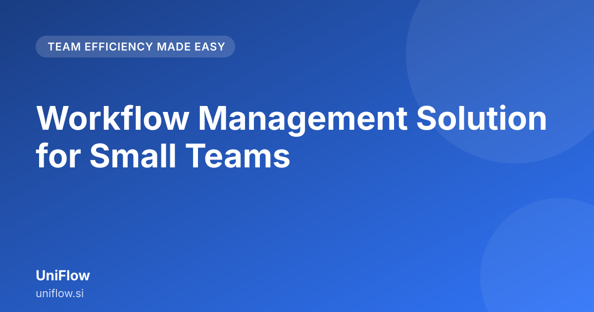

Workflow Management Solution for Small Teams

If your small team is drowning in emails, lost documents, and endless follow-ups, you need a proper workflow management solution for small teams. These teams often grow too fast for their current ad-hoc systems, leading to operational chaos. This guide cuts through the jargon to show how to bring structure and efficiency to your daily operations without needing a massive IT department.
What Operational Bottlenecks Plague Small Teams?
Small teams are the engine of many growing businesses, but they often lack the dedicated administrative overhead of large corporations. This lack of dedicated support means that the burden of process management falls directly onto the team members who are supposed to be doing the core work. This leads to several predictable bottlenecks that slow down growth.
The Email Overload Trap
For many small businesses, email is the primary tool for everything—from requesting a leave approval to sending a client invoice. When a process requires multiple steps, the email chain becomes a nightmare.
Consider a small digital marketing agency. A client approves a content brief via email. The content writer sees the email, starts the draft, and then sends it back for manager review. The manager replies, asking for revisions, all within the same thread. If someone is on vacation, that entire approval process stalls until they return, delaying the project timeline. This scattered communication is a classic sign of operational friction.
Fragmented Documentation and Approvals
When processes are not documented in one place, they live in people's heads. If the standard procedure for onboarding a new vendor isn't written down, the next person who handles it will likely do it differently. This inconsistency leads to errors and rework.
Approvals, in particular, become a guessing game. Is the finance lead expecting an email or a formal sign-off? Is the legal team waiting for a specific document attachment? Without a clear, automated path, critical decisions can be delayed by hours or even days.
Context Switching and Wasted Time
Every time a team member has to switch context—moving from writing a report to searching for the latest version of a template, then drafting an email to chase an approval, and finally updating a spreadsheet—they are losing valuable productive time. This constant context switching is a silent killer of productivity in fast-paced, lean teams.
Why Generic Workflow Tools Fail Small Teams (And How to Spot the Issue)
Many small teams try to solve their problems using generic project management tools or overly complex enterprise software. While these tools have powerful features, they are often overkill for the needs of a lean operation.
Over-Engineering the Simple Task
Generic tools are built to handle massive, complex, multi-departmental operations. For a small team, they often come with dozens of configurable fields, integration options, and advanced logic that you simply don't need. Trying to configure all those options just to automate a simple expense claim process is time-consuming and intimidating.
Steep Learning Curves
The biggest failure point is usually user adoption. If the tool requires extensive training, complex setup, and constant manual intervention to get the first simple process working, team members will quickly revert to the familiar—i.e., email. For a small team, the time spent managing the software often outweighs the time saved by it.
The "Build It Yourself" Trap
Many small teams try to build their own workflows using basic features of spreadsheets or chat apps. While this feels like a quick fix, it lacks the necessary structure for accountability. When a task is assigned in a chat, there is no built-in reminder, no audit trail, and no clear ownership if the task gets dropped. This is where the need for a dedicated workflow management solution for small teams becomes clear.
The Core Functions of a Workflow Management Solution for Small Teams
A good workflow management solution doesn't need to be a massive ERP system. For a small team, its core purpose is to take chaotic, manual steps and turn them into predictable, repeatable digital pathways.
Centralized Visibility and Single Source of Truth
The most important function is centralization. Every piece of work—the request, the document, the approval status—lives in one place. If a team member needs to know the status of a client proposal, they don't have to ask multiple people; they check the centralized system. This creates a single source of truth for all operations.
Automated Routing and Task Assignment
Instead of manually forwarding an email to the next person, the system automatically routes the task based on predefined rules. For example, if a sales lead hits a certain revenue target, the system automatically routes the follow-up task to the senior account manager, bypassing junior staff. This is the essence of effective small team process automation.
Clear Audit Trails and Accountability
When a process is automated, you gain an automatic record of who did what, and when. If an invoice was delayed, you can instantly see that it sat with the manager for four days without action, rather than having to rely on memory or scattered chat logs. This inherent accountability is crucial for maintaining high standards in a lean setup.
How to Implement Workflow Automation Without Becoming an IT Nightmare
The fear of complex implementation is real. However, the goal of a workflow management solution for small teams is to provide easy workflow implementation. You should not need a dedicated IT specialist to set up a simple leave request form.
Start Small and Solve a Pain Point
Do not try to automate your entire company on day one. Identify the single most annoying, repetitive, and high-frequency task that wastes time. Is it expense reporting? Is it client onboarding? Choose that one process. Build a simple, clear workflow around it first.
Focus on User Experience Over Feature Depth
When selecting a tool, prioritize ease of use over the number of features. The interface should be intuitive enough that a new team member can start using it within 15 minutes after a quick orientation. If the tool requires complex coding or deep system configuration for basic tasks, it is not suitable for small teams.
Define Clear Triggers and Actions
Every workflow needs two things: a trigger and an action.
- Trigger: What starts the process? (e.g., "A new document is uploaded," or "A form is submitted.")
- Action: What happens next? (e.g., "Send notification to Manager X," or "Change status to 'In Review'.")
Keep these triggers and actions straightforward initially. As you gain confidence, you can layer on more complex logic.
| Workflow Step | Example Action (Simple) | Example Action (Advanced) |
|---|---|---|
| Submission | Task assigned to Reviewer A | Task assigned based on project budget tier |
| Review | Status changes to 'Approved' | Status changes to 'Approved' only if attached PDF matches template version 3.0 |
| Completion | Notify Project Lead | Trigger integration to update CRM record |
Scaling Your Small Team Operations: From Ad-Hoc to Automated
The transition from handling work ad-hoc to having automated, repeatable processes is where true operational maturity happens. This is the difference between reacting to crises and proactively managing output.
Standardizing the 'How'
Automation forces you to standardize your processes. When you map out the approval flow for a new marketing campaign, you are forced to ask: Who needs to see this? What information do they need to make a decision? What is the deadline? This process of definition itself is a massive operational win, regardless of the tool you use.
Empowering Team Members
When processes are clear, team members spend less time managing paperwork and more time executing their core responsibilities. They no longer have to chase approvals; they trust the system to move the ball forward. This shift in focus is what allows small teams to scale without exponentially increasing headcount.
Continuous Improvement Loop
A workflow management system provides data points. You can see that the average time spent in the "Legal Review" step is five days, while the "Design Review" step is one day. This data allows you to focus your improvement efforts precisely where they are needed—in this case, reviewing your legal review SLA or process.
When to Upgrade Your Process Management (A Practical Guide)
Knowing when to move from manual tracking (spreadsheets, emails) to a dedicated platform is key to avoiding unnecessary investment.
You should seriously consider upgrading when you notice any of the following patterns recurring in your daily work:
- The "Where Is It?" Question: More than three different people ask you where a specific document or task is at any given time.
- The Rework Cycle: You are spending significant time fixing errors that could have been caught earlier in the process.
- The Bottleneck Person: One specific person is constantly overloaded because they are the required checkpoint for every critical decision.
- The Process Drift: Your team members are constantly creating "workarounds" because the official documented process is too cumbersome or doesn't account for real-world scenarios.
If these signs are present, it’s time to look for a dedicated workflow management solution for small teams. See UniFlow to learn more: https://uniflow.si/
Further reading across our network: Indian Labor Law Compliance: A Practical HR Roadmap · BusinessOS HRMS
Conclusion
For small teams, efficiency isn't about adding more features; it's about eliminating friction. A workflow management solution for small teams should act as an invisible layer of structure over your busy daily work, ensuring that approvals happen on time, documents are always current, and your team can focus on delivering value, not chasing status updates. By starting small, automating the most painful bottlenecks, and maintaining a focus on user simplicity, you can transform your operations from chaotic to controlled. See UniFlow at https://uniflow.si/
Frequently asked questions
What is the biggest mistake small teams make with their processes?
The biggest mistake is relying on informal processes—like scattered emails or sticky notes—which leads to context switching and missed steps. A dedicated solution centralizes these actions, creating a single source of truth for every task.
How quickly can a small team adopt a new workflow tool?
The key is choosing a solution designed for speed of adoption, not enterprise customization. A good workflow tool should allow you to map and automate essential processes quickly so your team can start seeing immediate efficiency gains.
How does process automation help a small team manage approvals?
Automation removes the need for manual chasing. By embedding approval steps directly into the workflow, the system automatically routes requests to the correct person at the right time, ensuring nothing gets lost in an inbox.
Why are generic workflow tools not ideal for small teams?
Generic tools often lack the simplicity and tailored functionality needed by lean teams, leading to unnecessary complexity and wasted time.